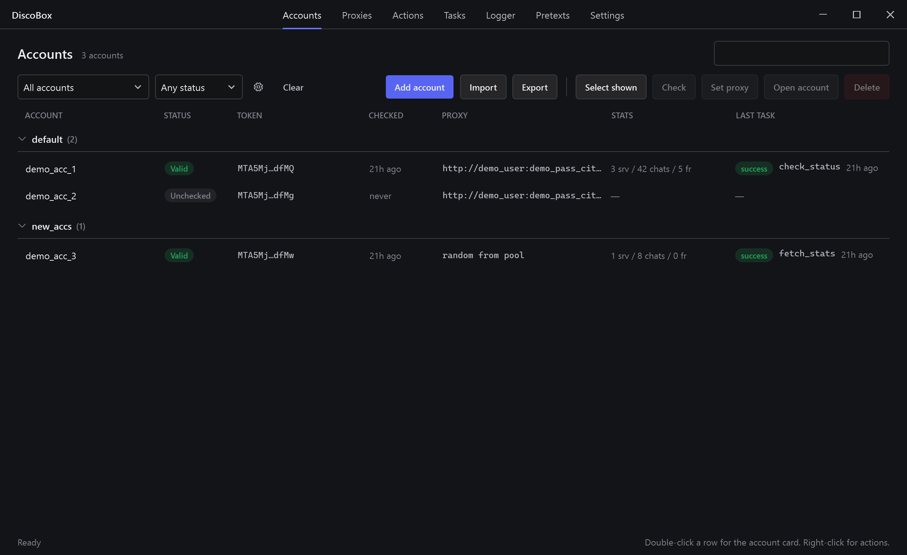

Discord account manager and token checker for Windows
DiscoBox keeps your Discord accounts in one place: import token lists, check them through their own proxies, browse any account in its own Chrome profile. A desktop app, not a web service, not a telegram bot. Your tokens, your disk.
download v0.2.0 source on github free, open source, Windows 10/11 x64

What it manages
Accounts live in a local store on your machine, grouped and tagged the way you work with them. Every action runs over the selection you made, never over the whole list by accident.
- Import in token, email:password:token, token:proxy and a few more shapes, with a dry-run before anything is stored.
- Groups, tags and a scope filter, so checks and tasks touch only the slice you selected.
- Per-account proxy set by hand or drawn from a pool, HTTP and SOCKS5, sticky sessions synthesized for rotating residential lines.
- Export back to txt or json; the txt roundtrip carries notes and the last task result.
- Everything in %AppData%\DiscoBox, tokens and proxy creds masked in every log line.
Token checking
A check asks Discord who owns the token, through the account's own proxy, and maps the answer to a status in the table. Dead tokens show up before they waste a run.
- Status per account: valid, invalid or rate-limited, plus the check time.
- fetch_stats adds servers, sendable channels and friends, cached on the row.
- Select a few rows or the whole list; results land in the table and survive restarts.
- Live trace per run in the account card and the logger tab.
Token login in Chrome
Open in Chrome unpacks the account's profile zip into a user-data dir, starts Chrome behind a local proxy relay (GOST, for proxies with auth) and injects the session token into the page, so the account is logged in without a password. If Discord rotates the token mid-session, the app stores the new one back. One session at a time, on purpose: two browsers on one profile zip end badly.
Scoped sends
The send action discovers guilds the account already belongs to, computes effective channel permissions from roles and overwrites, and posts there. Nothing joins servers on your behalf. Template pools rotate the text, delays and daily caps pace the run, and a captcha in any answer stops it instead of retrying.
Quick start
- Unpack the release zip anywhere and run the exe inside. First start creates %AppData%\DiscoBox.
- Settings: point the Chrome path (Detect finds it usually) and gost.exe if you use authenticated proxies.
- Proxies tab: add your lines, one per proxy, lists accepted. Accounts tab: Import, paste, Analyze for the dry-run, then Import.
- Select accounts, hit Check. Double-click a row for the card; Open in Chrome and the send builder live there and in the Actions tab.
The README covers every tab and lists the rough edges on purpose.
Requirements
- Windows 10/11 x64; release zips are self-contained, no .NET install
- Private HTTP or SOCKS5 proxies and the Discord tokens you manage
- Optional, for account browsing and authenticated proxies: Google Chrome and GOST
FAQ
Is DiscoBox a spam bot?
No, and keeping it that way is on you. The core is checking tokens and managing accounts. Sending exists as one action among many, and it only touches channels the account already belongs to, with a guild filter, delays, daily caps and a hard stop on captcha. Point it at your own servers.
Where do my tokens live?
In %AppData%\DiscoBox as json on your disk. Nothing uploads anywhere: no server, no telemetry, no phone-home. Log lines mask tokens and proxy passwords at write time. Anyone with your Windows session can still read that file, so treat the machine as part of the setup.
Do I need proxies for every account?
For anything beyond storage, yes. Checks and sends go out through the account's own proxy so Discord sees a consistent IP per account. Paid private proxies, one per account or a shared pool with sticky sessions. Public and free proxies get accounts deauthorized fast.
Will checking tokens get accounts limited?
A check is a single REST call through the account's proxy, the same request the desktop client makes at startup. What gets accounts limited is behavior: joins from flagged invites, instant mass sends on fresh accounts, retrying past a captcha. The app stops a run at the first captcha instead of pushing.
Is it free and open source?
Yes. MIT license, source and release zips on GitHub, no premium tier, no keys, no signup. Builds are self-contained, so no .NET install either.
Risk warning
Discord's terms do not welcome automation on user tokens, and accounts driven through their token can be limited or terminated at any point, with no appeal path that cares about this app. Use accounts you own and can afford to lose, keep sends inside servers you run, and do not point any of this at communities you do not own. DiscoBox is automation software with no warranty of any kind.